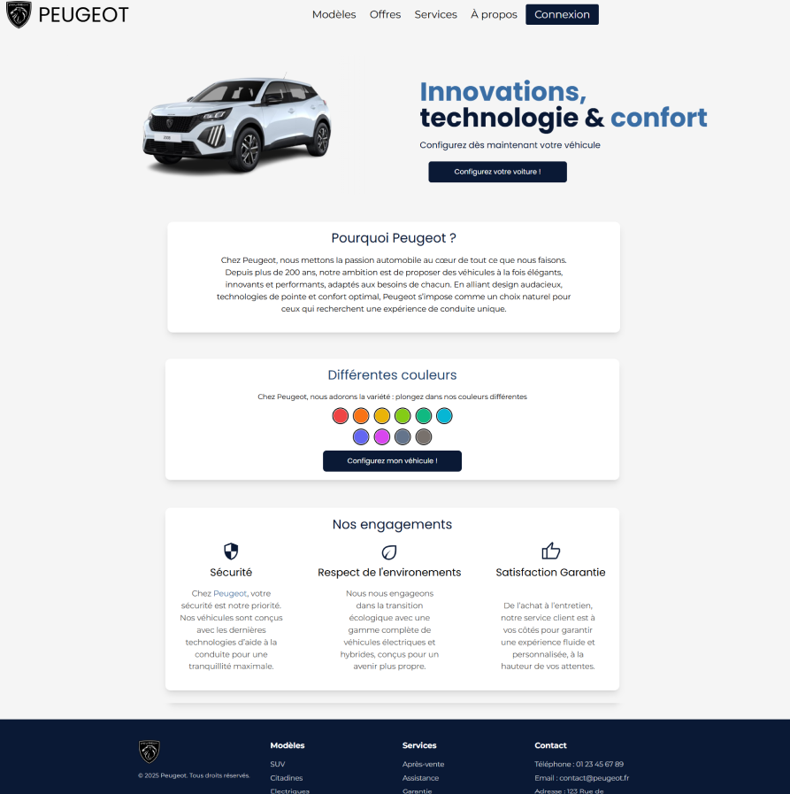
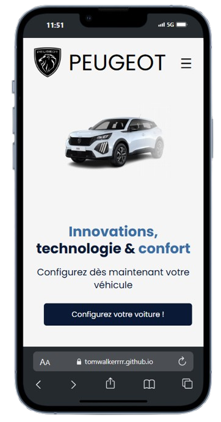
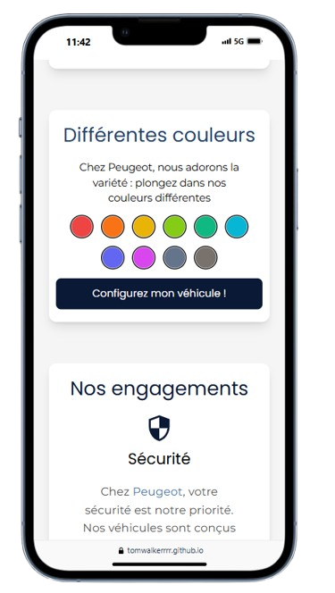
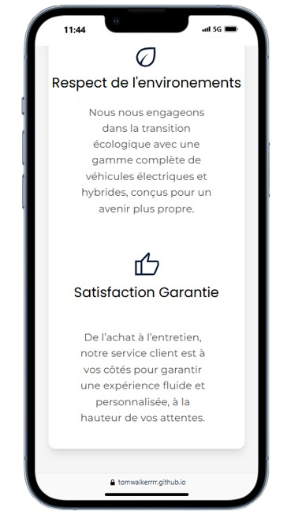

Projet d'imitation du site Peugeot




En explorant différents sites pour m’entraîner à les reproduire et améliorer mes compétences, je suis tombé sur le site de Peugeot. J’ai constaté qu’il obtenait un score de seulement 30 % sur Lighthouse. Cela m’a immédiatement donné envie de relever le défi : reproduire et optimiser ce site en corrigeant ses points faibles.